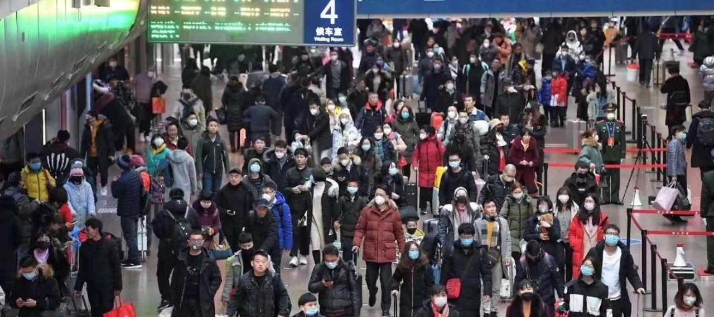
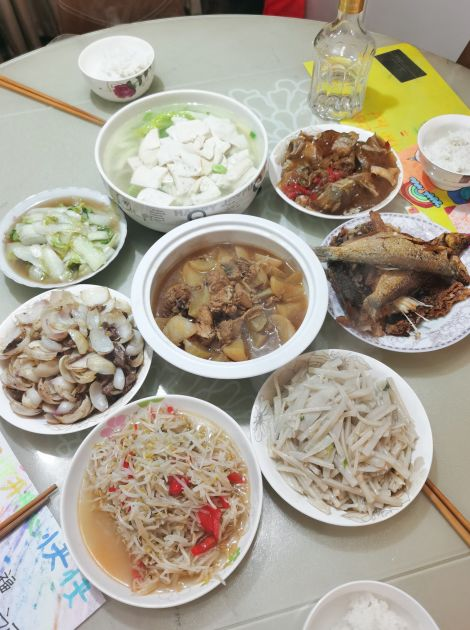
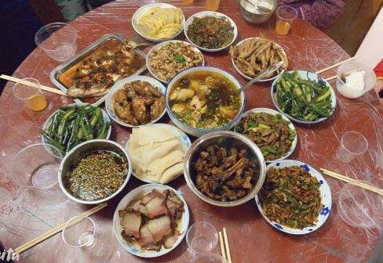
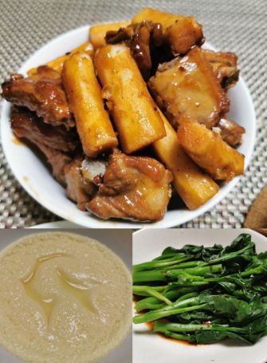
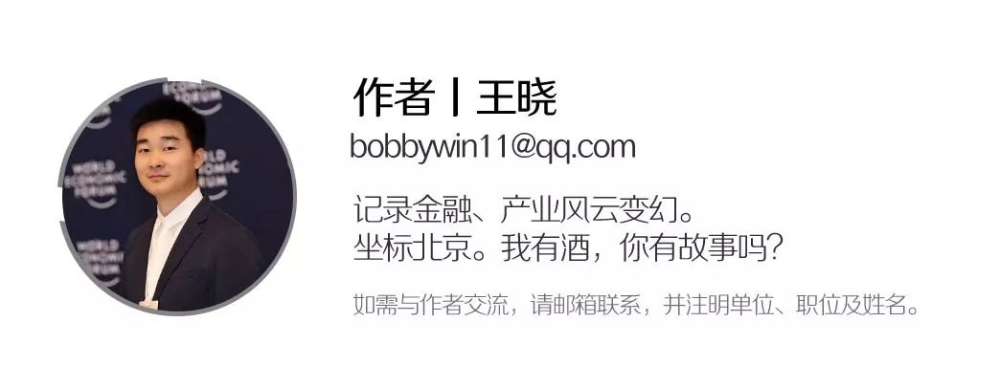

在人间丨武汉年夜饭
原文链接 备份链接 本视频为今年的年三十，武汉父母与身在外地的孩子 隔空互送新年祝福 年夜饭，是中国人最看重的家庭宴会。1月24日，武汉封城第二天，年三十，有23个武汉人给我们分享了他们的年夜饭。 @王启明： 今天是武汉封城的第二天，也是 …


作者 | 王晓
出品 | 棱镜·腾讯小满工作室
欢迎下载腾讯新闻APP，阅读更多优质资讯

对于湖北人民来说，2020年的这个除夕夜太不平常了。
“药店大姐告诉我们，口罩绝不涨价，不发国难财，而且告知我们第二天早7点开门N95口罩应该能到货。我还是挺感动的。”来自武汉的丽娜说。
“我们今天中午吃完年饭后约好不串门，不出门打牌，并且商量好线上红包拜年就好。”在湖北赤壁过年的陈庆选择了这样的过年方式。
而没能回到荆州老家、在北京一人过年的杨果则表示，以及已经叮嘱爸妈在家别出门，“等疫情散了后再团聚。”
自武汉发端的新型冠状病毒感染肺炎疫情牵动着全国人民的心。1月23日凌晨，武汉宣布疫情管控升级，自23日10时起，武汉市公共交通停运，机场、火车站离汉通道暂时关闭。随后，黄冈、鄂州、赤壁、孝感等湖北多地市相继响应。
据环球时报报道，截至1月24日22时，全国共确诊新型冠状病毒肺炎896例，死亡病例26例，治愈36例。
武汉及周边城市的居民如何应对这场突如其来的疫情？他们将如何度过这个春节？除夕这天，《棱镜》对话了四个来自武汉及周边城市的家庭，也第一时间云共享了他们的年夜饭。饭菜一如往常，但心境却各不一样。
以下是他们的自述：

快递优先，药店大姐说口罩绝不涨价
讲述人：丽娜，两个孩子的母亲
坐标：湖北武汉
1月19日晚10点，大学同学发来问候，问我在武汉还好吗？我说还好，心里涌起一阵感激。当天下午，我照旧带着孩子去上培优课。培优班的孩子们毕业升学在即，仍在抓紧最后一个寒假冲刺学习。
1月20日，孩子培优班最后一天课，我们戴口罩坚持上完课，做好放假学习计划和生活计划，准备过年。
1月22日，疫情升级，我和先生戴上口罩分别去了超市、菜场和药店，买了各种蔬菜、主食、副食、饮料、水果、日用品以及医用口罩、板蓝根。超市人有些多，但商品都齐备，没有发觉有缺货的状态，也没有出现抢购的情况。本想多囤些货，但超市说春节会保障供应，我们就没买太多东西。
1月23日一早，家人告知我武汉“封城”了。我们想还是多储备些食品和用品，自觉做好长期在家隔离的准备。社区的超市、药店和菜场都还井然有序地开业，早点摊、年货摊也照旧，年味渐浓，大家的生活似乎并未被这场疫情打乱。
药店大姐告诉我们，口罩绝不涨价，不发国难财，而且告知我们第二天早7点开门N95口罩应该能到货。
顺丰快递发出通知节日期间持续运营。外地友人给我们寄了些营养食品，说现在发去武汉的药品等物资都会优先保证。而且快递多数自提，避免人与人接触。我想，即便疫情升级，快递没停还是非常重要的。
路上，大家都自觉戴好了口罩，日常生活跟往常没有什么不同。
除夕这天，我们家已经备足了年货。早上像往年一样贴春联，我们帮着妈妈准备饺子做年夜饭，孩子们完成学习后看看书又画画，爸爸坐在沙发上看电视，一家人和和乐乐，家人友人们也互致节日问候。加油武汉，鼠年吉祥！

丽娜家的年夜饭
戴口罩曾被指“不尊重人”，所幸村里过年习俗取消了
讲述人：李亚，兼职婚礼摄影师
坐标：湖北孝感
我业余时间做婚庆摄像，本地婚庆主持人、摄影师们拉了个交流群。最近，大家都在为病毒性肺炎的事情苦恼。
武汉疫情引发全国关注，但其实周边县市的状况更让人忧心。武汉城市圈的覆盖很广，城际铁路和私家车的普及大大提高了人员流通效率，许多在武汉务工的人返乡过年。
我元旦后没多久就感冒了，所以更加注意，出门都戴口罩，但也受到了很多指责：参加朋友婚礼时被人指责“不尊重人”，接待来宾时还被要求“摘下来”。此前，孝感一直没有确诊病例，身边很多朋友、亲戚都觉得不严重。
举办婚礼的新人们也都觉得孝感情况没那么严重，另外距离婚礼举办只有几天了，不好意思再取消。
直到1月24日（除夕）下午四时，我接下的6个春节期间的婚礼摄像工作终于取消，长舒了一口气。但还有群友接的婚礼主持工作到现在还没取消：“你们摄像还能戴个口罩，我主持怎么戴？”
1月23日，孝感也要求公共场合强制戴口罩，这才好一些。我今天出门采购的时候发现，超市里几乎都戴口罩了，而且蔬菜供应充足，价格平稳，土豆、萝卜、山药这些能存放的比较受青睐。
今天，孝感首次报告有22例确诊病例。下午，孝感也通知暂停辖内公共交通，离开孝感通道暂时关闭。
更让我担心的是周边农村的情况。相较互联网上热烈的讨论，周边农村的居民囿于文化水平限制对此次病毒性肺炎的严重性认知不足，更别说防护了。而且农村情面薄，不好意思取消拜年或戴口罩拜年。腊月、正月还是农村婚嫁的高峰期，酒席多，人口聚集容易交叉感染。
城区的酒店已经接到通知，禁止承办聚会活动，但农村的红白喜事等群体活动都照办。真应该动用村头的大喇叭不断广播提醒大家，少聚众、少流动、少拜年，不要因为抹不开的面子，造成疫情进一步传播。
我家有远亲过世，习俗要求大年初一“办新香”，邀请亲朋好友吃饭。我建议取消，但长辈要求大年三十晚上必须回去，否则是不敬。
好在昨天开始村委派人上门，先是取消了十三玩龙灯的传统，又建议不办红白喜事，长辈这才同意不用回去。
今天中午，湖北省启动重大突发公共卫生事件Ⅰ级响应，多种形式的公众聚会开始被叫停。

李亚家的年夜饭
我带回来的口罩终于有人要了
讲述人：陈庆，企业行政
坐标：湖北武汉、赤壁
我是武汉人，老公是湖北赤壁人，我们两人都在北京工作。
去年12月31日武汉卫健委首次发布不明原因病毒性肺炎消息的时候，我就主张今年春节不回老家过年，但老公的家庭观念特别重，就是“下刀子”也得回去过年。期间妈妈也一直劝我，说现在没什么问题，回去不要紧。
1月20日下午，我们一家三口自驾回到武汉，往年都会在武汉待到除夕那天才回赤壁，但这次比较担心，当晚就回了。
1月20日晚上，钟南山院士接受央视采访时确定病毒会“人传人”，我特别后悔自己不够坚定。
我一直关注病毒性肺炎的进展，在北京买了一箱N95口罩带回来，但当时根本没人要。同学聚会和闺蜜约饭我都推了，被大家笑话我“怂”。
我发了很多关于病毒性肺炎的科普信息给亲戚、朋友，提醒他们不要去人员密集的地方，但大多数人都回我“冇得事”。
1月21日，我和老公回到赤壁。当天，疫情升级，国家卫健委专家建议：现在能不到武汉去就不去，武汉人能不出来就不出来。
这时候大家才开始意识到问题的严重性。我打电话叮嘱妈妈不要出门，她告诉我哥哥已经来取口罩了。
不过，公婆家这边的工作更难做。公公去菜场买菜不戴口罩，话还不能说重了，我现在只能不让他出门。
从昨天（1月23日）起，村长天天来我家报到，咨询记录外来打工人员动向和目前状况，要每天排查每天汇报。
尽管之前找口罩、给大家科普病毒信息，但收效不大。直到最近娘家和婆家周边不断有感染案例大家才重视起来。
现在我的亲友们都已经戴上口罩。今天中午吃完年饭后也约好不串门，不出门打牌，并且商量好线上红包拜年就好。

陈庆家的年夜饭
爸爸退掉了来看我的高铁票
讲述人：杨果，文化传媒行业职员
坐标：北京
1月24日早上，爸爸退掉了从荆州来北京的高铁票，对我说：“吃好点。”
考虑到当前湖北省的疫情情况，爸爸决定响应号召，待在家里减少人群接触。
这是我第一个在国内却没有回家过的春节。就在三天前，我还坚定地一定要回家过年，只不过往常都在武汉玩几天再回，这次准备直接回荆州不在武汉停留。
1月22日早上，荆州也出现了病毒肺炎确诊病例。许多朋友劝我：别回来了。中午时分，我终于决定退票，安心在北京待着。
但父母怎么也不能理解，“一家人在一起才算过年。”爸爸决定来北京陪我过年。但形势变化太快了，1月23日凌晨，武汉通知开始关闭市内公共交通，离汉通道暂时关闭。随后，黄冈、鄂州等地陆续开始宣布暂时关闭离开通道。
随着确诊人数直线上升，于是出现了开头这一幕。在武汉务工的其他亲人也决定留在武汉过年，年夜饭取消。没多久，荆州通知于1月24日中午开始关闭离开通道。
我也一直关心着武汉和湖北疫情的发展，为医生上下班的住宿问题、病人的安置问题忧心，希望这些问题能尽快得到解决。
往年春节，我们都会一起去监利县的奶奶家吃年夜饭，一大家人热热闹闹。今年则各自在家。
除夕夜，我自己做了清炒菜心、山药排骨和蛋羹，这就是我的年夜饭。吃完了和家人微信送上祝福，叮嘱家人不要随便出门，然后安心看春晚。
虽然今年没能一起过年，但是平时还可以继续回去，爸妈也可以来看我。就等疫情散了后再团聚呗。

杨果家的年夜饭
（以上自述者均为化名）


感谢您的阅读，欢迎在文后留言并点击“在看”，留言点赞第一名且60以上，获得一个月腾讯视频会员哦~ （截止时间：下周一下午18：00）

聚焦中国科技创新，书写深度商业故事
欢迎关注深网公众号，阅读更多优质原创内容。


扫码查看腾讯新闻客户端相关文章

本文版权归“腾讯新闻”所有，如需转载请在文后留言，经允许后方可转载，并在文首注明来源、作者及编辑，文末附上棱镜二维码。
第558期
实习运营编辑：陈诗雨 黄贺

点击“阅读原文”，查看腾讯新闻客户端相关独家文章！
你“在看”我吗？

原文链接 备份链接 本视频为今年的年三十，武汉父母与身在外地的孩子 隔空互送新年祝福 年夜饭，是中国人最看重的家庭宴会。1月24日，武汉封城第二天，年三十，有23个武汉人给我们分享了他们的年夜饭。 @王启明： 今天是武汉封城的第二天，也是 …
原文链接 备份链接 这注定是一个难捱的春节。 截至1月23日24时， 全国确诊新型肺炎病例830例， 死亡25例。 截至1月23日晚，中国新型肺炎疫情地图（来源：丁香医生） 同时，国际确诊案例也陆续出现。 截至1月23日，数据如下： 泰 …
原文链接 备份链接 历史上，很多置人于死地的病毒并不是被人类消灭了，而是人类和它们分开居住了。 记者 | 吴洋洋 许冰清 刘娉婷 郑晶敏 郭苏妍 邓舒夏 数据资料整理 | 王一越 图表制作 | 程 星 确诊人数出现激增72小时之后，武汉 …
原文链接 备份链接 你怀着怎样的心情，度过了2020年的大年夜？ 在得知武汉封城的新闻后，三明治紧急发起了每日书特别版《武汉日常》，邀请人在武汉和家乡在武汉的朋友，一起来用文字忠实记录他们在这个特殊时期的生活日常。 招募一经发出，就有近百 …
原文链接 备份链接 1月23日凌晨，武汉宣布自10时起，全市的航空、铁路、城市公交、地铁、轮渡、长途客运暂停运营，无特殊原因，市民不要离开武汉。新型冠状病毒肺炎，正考验着这座九省通衢的特大城市。 此后24小时，真实故事计划访问了几位选择留 …